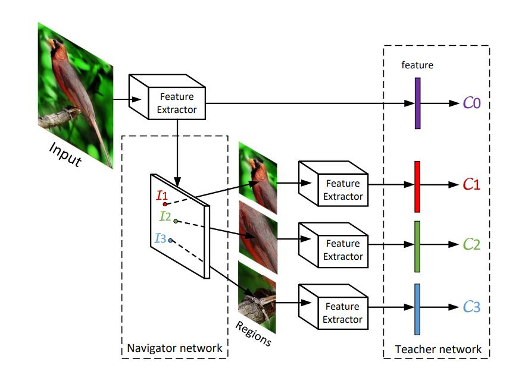

细粒度：NTS-Net¶
综述¶
会议时间：European Conference on Computer Vision 2018 (ECCV, 2018)
源码地址(PyTorch版本)：https://github.com/yangze0930/NTS-Net
针对领域：细粒度图像分类(FGVC)
关键词：细粒度分类、导航学习、区域检测
主要思想¶
如何找到具有区分度的区域对细粒度分类具有重要的意义，而传统的区域检测方法大体可以分为两种：一种是基于人工标注的显著区域进行学习，这样做不仅需要消耗大量的人力资源，而且显著区域的选择还会受到主观因素的影响；另一种是基于无监督学习的区域检测方法，但由模型缺乏保证模型聚焦在正确区域的机制，因此精度通常难以提升。本文中作者提出了一种新的自监督机制来有效地监督信息区域定位的模块，并且不需要额外的标注区域。
在以往的方法中，定位具有区分度的区域一般被认为是定位信息量大的区域，因此通常利用滑动窗口的思想来实现区域的检测，对原图的区域信息量进行一个评估， 之后挑选出信息量最高的前几个区域，最后再基于该区域做一系列的操作，其中，区域检测模块最关键的就是对原图信息量的评估，目标检测任务中，由于目标区域具有准确的标签，因此网络可以得到很好地优化。但是在细粒度分类中，只有图像级别的标签(即类别标签)，没有额外的区域坐标标签(一般考虑基于弱监督学习的算法)，因此评估信息量的模块往往得不到很好的优化，因此，细粒度分类中如何优化定位模块对关键区域的定位是解决问题的核心所在。
本文中，作者在区域检测模块(Navigator)的基础上，又增加了监督模块(Teacher)，用于优化区域检测的一系列参数，使网络得定位更加准确。该监督模块围绕着一个中心思想：信息量大的区域往往包含更多的语义特征、因此应当具有更高的预测概率。假设，A为所有区域的集合，I为信息函数，表示信息量的大小，C为置信度函数，表示区域对真实类别的预测概率，有如下条件成立：
网络结构¶
网络流程¶
网络主要流程如下图：
作者设计了Navigator模块来近似信息函数I，Teacher模块来近似置信度函数C。首先Navigator对原图的区域做一个评估，评估区域集A中每个区域R_i的信息量，选取前几个区域信息量大并且区域间冗余度低的M个区域，传入Teacher模块，相应的预测其置信度，利用M个区域的置信度与信息量间的排序损失来优化Navigator模块，利用M个区域的置信度与真实标签的交叉熵损失来优化Teacher模块。随着网络逐渐收敛，它将准确地预测真正对分类有用的区域，选取前K个信息量高的区域，这些区域将促进细粒度分类，再将它们与原图一同输入到Scrutinizer中，用于预测最终的类别概率，利用最终的预测概率与真实标签的交叉熵损失来优化Scrutinizer模块。(注意：用于反馈、优化Navigator的是前M个区域，用于预测最终类别的是前K个区域，这里有两个超参数，不要弄混了，并且M最好大于等于K)
Navigator¶
Navigator主要是用于对原图区域的信息量做一个评估，并且选出前几个信息量高的区域用于后续的分类预测。作者利用锚点(目标检测中常用的区域检测方法)来预测区域的信息量，对于大小448×448的图像，作者选择具有尺度为{48,96,192}和比例为{1:1,3:2,2:3}的锚点进行检测，生成一堆矩形区域，每个区域都有一个表示该区域信息量的分数。
作者受FPN(特征金字塔)结构的启发，设计了自上到下带有横向连接的结构去检测多尺度区域（但源码好像没有这一横向连接操作），利用卷积去计算特征，通过控制卷积核的尺寸与步长大小，来缩小特征图的尺寸，增大感受野。具体结构可见NTS推理过程图(Scrutinizer小节中)，不同尺寸的特征图代表了不同的尺度信息，较大特征图中的点对应原图中较小的区域。在论文中，作者采用{48×48, 96×96, 192×192}三种区域尺度（即锚点大小），对应于特征图尺寸为{14×14, 7×7, 4×4}。(注意，在经过Navigator模块之前，原图已经经过了一次特征提取操作，得到的特征图尺寸为14×14，再依次经过步长为2的卷积得到7×7和4×4的特征图，具体实现过程可见源码笔记)
在得到每个区域的区域信息量后，作者又利用非极大值抑制(NMS)方法，选取信息量大并且相互间冗余度低的M个区域和K个区域，前M个区域传入Teacher模块，用于对Navigator的预测结果做评判，进一步优化该模块的参数；前K个区域传入Scrutinizer模块，用于预测最终的图像概率。
Teacher¶
Teacher近似于映射C：A->[0,1]，即评价每个区域的置信度。接收到来自Navigator模块的M个区域之后，将其调整到指定的大小(作者调整到了224×224)，再分别将其传入特征提取网络提取特征，最后传入全连接层进行分类预测，取出标签类别的预测概率，作为该区域的置信度C，具体流程如下图(M取3)：

得到区域置信度后，再将区域置信度C与区域信息量I做排序损失(损失函数的构建可见损失与优化小节)，进一步优化Navigator的模块参数。
Scrutinizer¶
Scrutinizer主要用于最终的分类预测。接收到来自Navigator模块的K个区域之后，与Teacher模块类似，将其调整到指定的大小(作者调整到了224×224)，然后再传入特征提取网络提取特征。之后，再将这K组特征与输入图像的特征连接起来，并将其传入全连接层中，预测最终的类别概率，网络具体的推理图如下：
损失与优化¶
Navigation loss：假设预测得到M个窗口，他们的信息量为I，并且由Teacher得到的置信度为C：
注：这里的排序损失由于只有信息量参与运算，因此该损失只参与优化定位模块，即滑动窗口操作。
Teaching loss：定义Teacher模块的损失函数如下：
Scrutinizing loss：Navigator模块预测得到的区域中，选取K个区域，再结合原图X，Scrutinizer将所有特征图融合，最后得到一个预测概率：
精度对比¶
CUB-200-2011
Aircraft以及Stanford Cars
总结¶
本文提出了一种新的无需边界框标注的细粒度分类算法。由navigator模块预测区域信息量，Teahcer模块对预测的信息量打分，利用区域的信息量和置信度(分数)之间的排序损失，对navigator进行优化，最后Scrutinizer模块将综合考虑原图特征以及一些信息量大的区域特征，对图片的类别做出最终的判断，三个模块互相合作，互相加强，有效地提高了网络细粒度的分类能力。
注：以上仅是笔者的个人见解，若有错误，欢迎大家批评指正
最后一次修改日期：2021年11月18日